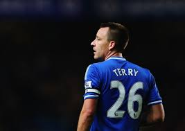

Chelsea's emblem has changed four times. In the early 1905, the founders of Chelsea adopted their first official emblems, which were conceived in the image of "Chelsea Pensioner." One of Chelsea's nicknames, "Pensioners," derives from it, and this pattern has been around for half a century. In 1952, Ted Drake proposed the adoption of a new emblem to replace the existing badge of insignia as part of the club modernization work, which was soon accepted. However, the new patterns, including the team's initials C.F.C., were only used for a year. In 1953 Chelsea's emblem was changed again. The new pattern looked like a blue lion standing upright and holding a pole looking back, which has been used for about 30 years. The glyph was influenced by the crest of the Chelsea Metropolitan Borough (the Metropolitan Borough in London was abolished in 1965) , the lion in the crest of Count William Cadogan, the club president and his own, and the cane was West It is taken from the Minster Abbey abbot. Three roses symbolize England and two balls symbolize football. This pattern has been inscribed on uniforms since the early 1960s. In 1986, a new pattern was adopted. The new glyphs are replaced by the C.F.C. The figure of a lion on the initials. The lion was also a yellow lion, not blue. This has been the pattern of Chelsea for 19 years. In 2005, the 100th anniversary of the founding, new designs were introduced in response to the demand of many fans to revive old patterns. This is an improvement over that of 1953, and has been adopted as an official emblem with the opening of the 2005-06 season.
Chelsea's home kit is blue. However, the early home kits, unlike now, consisted of bright-turquoise shirts, white pants, black or dark blue socks. The shirt was changed to royal blue in 1912. Tommy Doherty, a newly appointed coach in the early 1960s, changed Chelsea's uniform once again, he unified both top and bottom in blue, and changed his socks to white. It made the team stand out more, and it made its debut in the 1964-65 season. Chelsea's form of home uniform soon followed, except for the period 1985-1992, when blue socks were worn.
